")
Ranged - Crossbows and Bolts
Introduction

Because of their compact size, and the force with which the crossbow hurls its projectiles, a new form of ammunition is necessary. The bolts that crossbows fire are invariably metal, occasionally tipped with the sharp edges of precious stones.
Crossbows can be constructed using a variety of skills, but those keen to shoot their prey with these powerful weapons can purchase crossbow parts from three salesdwarves located in Keldagrim, under White Wolf Mountain and in the Dwarven Mines.
Types of Crossbow
Crossbows come in a wide variety of styles and strengths, and almost all of them can be made from scratch by someone with the requisite Fletching, Smithing, Cooking and Crafting levels.
Note that blurite crossbows and bolts can only be obtained after completing The Knight's Sword, and, being blurite, are untradable.
| Crossbow | Required Ranged Level |
Ranged Attack Bonus | Bolts |
![[image]](../../img/main/kbase/weapons/ranged/crossbow1.gif) Crossbow |
1 |
+6 | Bronze |
![[image]](../../img/main/kbase/weapons/ranged/phoenix_crossbow1.gif) Phoenix crossbow |
1 |
+6 | Bronze |
| 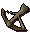 Bronze crossbow (m) |
1 |
+18 | Bronze |
![[image]](../../img/main/kbase/items/crossbows/blurite_oak_crossbow.gif) Blurite crossbow (m) |
16 |
+30 | Up to blurite |
| 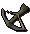 Iron crossbow (m) |
26 |
+42 | Up to iron |
![[image]](../../img/main/kbase/weapons/ranged/bone_crossbow.gif) Dorgeshuun crossbow (m) |
28 |
+42 | Up to iron/bone |
![[image]](../../img/main/kbase/items/crossbows/steel_teak_crossbow.gif) Steel crossbow (m) |
31 |
+54 | Up to steel |
![[image]](../../img/main/kbase/minigames/trails/trails_3/black_crossbow.gif) Black crossbow (m) |
33 |
+60 | Up to black |
![[image]](../../img/main/kbase/items/crossbows/mithril_maple_crossbow.gif) Mithril crossbow (m) |
36 |
+66 | Up to mithril/mithril grapple |
![[image]](../../img/main/kbase/items/crossbows/adamantite_mahogany_crossbow.gif) Adamantite crossbow (m) |
46 |
+78 | Up to adamantite |
![[image]](../../img/main/kbase/items/quests/zaniks_crossbow.gif) Zanik's Crossbow (m) |
48 |
+78 | Up to adamantite/bone |
![[image]](../../img/main/kbase/skills/hunter/items/hunterscrossbow.gif) Hunters' crossbow (m) |
50 |
+55 | Kebbit bolts |
| 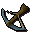 Runite crossbow (m) |
61 |
+90 | Up to runite |
![[image]](../../img/main/kbase/weapons/ranged/karil_weapon.gif) Karil's crossbow (m) |
70 |
+84 | Bolt racks |
![[image]](../../img/main/kbase/skills/dungeoneering/items/reward/chaotic_crossbow.gif) Chaotic crossbow (m) |
80 80 |
+100 | Up to runite |
Karil's crossbow is designed specifically to use bolt racks, which no other crossbow may use. Equally, Karil's crossbow may not use any of the other kinds of bolt.
The Dorgeshuun crossbow and Zanik's Crossbow may use bone bolts, which no other crossbow may make use of. On the other hand, it cannot use enchanted or tipped bolts. Be warned that Zanik's Crossbow comes with a -5 Prayer modifier.
The Hunters' crossbow will only take kebbit bolts, which are made from either tracking the razorback kebbit or deadfalling the prickly kebbit.
Chaotic crossbows start at 20% charge. A fully recharged chaotic crossbow will last 10 hours in combat before it breaks. Once these charges have been used up, the weapon can be recharged, for a fee, by the rewards trader in Daemonheim. To do so, right-click on him, and select 'Recharge' with the depleted weapon in your inventory.
Bolts
There is a wide variety of bolts that a ranger may use with their crossbows, and most of these can be made by the enterprising ranger provided they have the requisite Smithing and Fletching levels. Silver bolts are crafted rather than smithed.
| Bolt | Basic Ranged Strength | Tips | ||
| 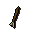 Bronze |
+ 10 | ![[image]](../../img/main/kbase/items/tips/barb_tips.gif) Barbed |
![[image]](../../img/main/kbase/items/crossbows/bolts/opal_tips.gif) Opal |
|
![[image]](../../img/main/kbase/items/crossbows/bolts/blurite_bolt.gif) Blurite |
+ 28 | ![[image]](../../img/main/kbase/items/crossbows/bolts/jade_tips.gif) Jade |
||
![[image]](../../img/main/kbase/items/crossbows/bolts/iron_bolt.gif) Iron |
+ 46 | ![[image]](../../img/main/kbase/items/crossbows/bolts/pearl_tips.gif) Pearl |
||
![[image]](../../img/main/kbase/items/crossbows/bolts/silver_bolt.gif) Silver |
+ 36 | n/a | ||
| 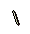 Bone |
+ 49 | n/a | ||
| 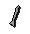 Steel |
+ 64 | 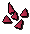 Red topaz |
||
![[image]](../../img/main/kbase/items/crossbows/bolts/black_bolt.gif) Black |
+ 75 | n/a | ||
![[image]](../../img/main/kbase/items/crossbows/bolts/mithril_bolt.gif) Mithril |
+ 82 | ![[image]](../../img/main/kbase/items/crossbows/bolts/emerald_tips.gif) Emerald |
![[image]](../../img/main/kbase/items/crossbows/bolts/sapphire_tips.gif) Sapphire |
![[image]](../../img/main/kbase/items/crossbows/bolts/grapple_tip.gif) Mithril grapple |
![[image]](../../img/main/kbase/items/crossbows/bolts/adamantite_bolt.gif) Adamantite |
+ 100 | ![[image]](../../img/main/kbase/items/crossbows/bolts/ruby_tips.gif) Ruby |
![[image]](../../img/main/kbase/items/crossbows/bolts/diamond_tips.gif) Diamond |
|
| 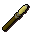 Kebbit bolt |
+ 28 | ![[image]](../../img/main/kbase/skills/hunter/items/kebbitspike.gif) Kebbit spike |
||
![[image]](../../img/main/kbase/skills/hunter/items/longspikebolt.gif) Long kebbit bolt |
+ 38 | 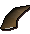 Long kebbit spike |
||
![[image]](../../img/main/kbase/items/crossbows/bolts/runite_bolt.gif) Runite |
+ 115 | ![[image]](../../img/main/kbase/items/crossbows/bolts/dragonstone_tips.gif) Dragonstone |
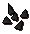 Onyx |
|
![[image]](../../img/main/kbase/weapons/ranged/karil_ammo.gif) Bolt rack |
+ 55 | n/a | ||
All of the bolts above can be poisoned, except kebbit bolts and bolt racks (neither of which can be enchanted), and those with gem tips (which can be enchanted). The mithril grapple is not a weapon as such, so it cannot be poisoned.
Enchanted Bolts
If you have gem-tipped bolts you may like to try enchanting them. Each type of gem can have a different spell imbued into it, so that certain bolts become far superior against certain foes.

As you can see, enchant bolt is not necessarily a level 4 spell, and you will need a higher Magic level in order to enchant the higher level bolts.
If you have the appropriate type of bolt in your inventory, as well as the requisite runes, you will be able to enchant your bolts. Each casting of the spell will enchant up to ten of the same type of bolt (it will only enchant fewer if you do not have ten equipped or in your inventory).
| Bolt | Enchantment | Magic Level | Required Runes | Effect | Ranged Strength* | ||
| 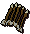 Opal |
Lucky lightning | 4 |
![[image]](../../img/main/kbase/items/runes/crune.gif) Cosmic rune x1 |
![[image]](../../img/main/kbase/items/runes/arune.gif) Air rune x2 |
Chance of a lightning bolt striking your opponent and causing extra damage. | + 14 | |
![[image]](../../img/main/kbase/items/crossbows/bolts/blurite_jade.gif) Jade |
Earth's fury | 14 |
Cosmic rune x1 |
![[image]](../../img/main/kbase/items/runes/erune.gif) Earth rune x2 |
Chance of knocking your opponent to the ground; agile opponents may resist this. | + 30 | |
![[image]](../../img/main/kbase/items/crossbows/bolts/iron_pearl.gif) Pearl |
Sea curse | 24 |
Cosmic rune x1 |
![[image]](../../img/main/kbase/items/runes/wrune.gif) Water rune x2 |
Chance of a mighty bolt of water crashing down upon your opponent. This is negated by opponents wielding water staves, but is increased against fiery opponents and those wearing certain fiery garments. | + 48 | |
![[image]](../../img/main/kbase/items/crossbows/bolts/steel_topaz.gif) Red Topaz |
Down to earth | 29 |
Cosmic rune x1 |
![[image]](../../img/main/kbase/items/runes/frune.gif) Fire rune x2 |
Chance of lowering your opponent's Magic level. Only works on other players. |
+ 66 | |
![[image]](../../img/main/kbase/items/crossbows/bolts/mithril_sapphire.gif) Sapphire |
Clear mind | 7 |
Cosmic rune x1 |
Water rune x1 |
![[image]](../../img/main/kbase/items/runes/mrune.gif) Mind rune x1 |
Chance of lowering your opponent's Prayer points and giving part of them to you. Only works on other players. |
+ 83 |
![[image]](../../img/main/kbase/items/crossbows/bolts/mithril_emerald.gif) Emerald |
Magical poison | 27 |
Cosmic rune x1 |
Air rune x3 |
![[image]](../../img/main/kbase/items/runes/nrune.gif) Nature rune x1 |
Bolts count as being poisoned, with an increased chance of poisoning your opponent. | + 85 |
![[image]](../../img/main/kbase/items/crossbows/bolts/adamantite_ruby.gif) Ruby |
Blood forfeit | 49 |
Cosmic rune x1 |
Fire rune x5 |
![[image]](../../img/main/kbase/items/runes/blrune.gif) Blood rune x1 |
Chance of losing 10% of your current life points to remove 20% of your opponent's current life points. Does not work if you have less than 10% of your max life points left. | + 103 |
![[image]](../../img/main/kbase/items/crossbows/bolts/adamantite_diamond.gif) Diamond |
Armour piercing | 57 |
Cosmic rune x1 |
Earth rune x10 |
![[image]](../../img/main/kbase/items/runes/lrune.gif) Law rune x2 |
Chance of negating a sizeable portion of your opponent's defence against Ranged attacks. | + 105 |
![[image]](../../img/main/kbase/items/crossbows/bolts/runite_dragonstone.gif) Dragonstone |
Dragon's breath | 68 |
Cosmic rune x1 |
Earth rune x15 |
![[image]](../../img/main/kbase/items/runes/srune.gif) Soul rune x1 |
Chance of inflicting a dragon's breath hit against your opponent, unless they have an anti-dragonbreath shield, or are some type of fiery beast such as a dragon. | + 117 |
| 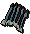 Onyx |
Life leech | 87 |
Cosmic rune x1 |
Fire rune x20 |
![[image]](../../img/main/kbase/items/runes/drune.gif) Death rune x1 |
Chance of doing extra damage and healing a small amount. Does not work on undead, as they have no life to leech. | + 120 |
* Note that gem-tipped bolts benefit from this ranged strength whether they are enchanted or not.
Grapples
![[image]](../../img/main/kbase/items/crossbows/bolts/mithril_grapple.gif) The grapple is a cunning tool devised for scaling high obstacles that mere Agility is not enough to surpass. Rangers may create mithril grapples and attach them to mithril bolts provided their Smithing level is high enough. To then use the grapple, you will need to combine it with a length of rope and use that on the shortcut. You must have a crossbow equipped to make use of your grapple.
The grapple is a cunning tool devised for scaling high obstacles that mere Agility is not enough to surpass. Rangers may create mithril grapples and attach them to mithril bolts provided their Smithing level is high enough. To then use the grapple, you will need to combine it with a length of rope and use that on the shortcut. You must have a crossbow equipped to make use of your grapple.
Each time you use your grapple there is a small chance that it will break, so it's a good idea to have a couple, making sure you can make the return journey.
As these shortcuts require Ranged, Strength and Agility to use, you will find a list of them in your Strength Skill Guide. Each shortcut listed will also show the Ranged and Agility requirements.
Further information about grapple shortcuts can be found in Agility - Shortcuts.
Pouches

Pouches are designed for storing bolts, allowing the ranger to keep inventory space free for all the loot their prey drops. Each pouch has four 'slots', as well as access to equipped ammunition. To store bolts in your pouch, right-click on them and select 'Use', then click on the pouch. Left-clicking on the pouch will open a menu showing you what you have stored inside:
Each of the four slots available can hold up to 255 bolts. Bolts can be removed from the pouch or equipped by right-clicking on them. Note that due to their size, grapples cannot be stored in your pouch.
Bolt pouches are untradable, and if you drop a pouch it will be destroyed and any bolts in the pouch will appear on the ground. For this reason, it is a good idea to make sure you have inventory space for all of the bolt types inside the pouch before you destroy it.
Pouches can be purchased from the crossbow salesdwarf in Keldagrim.
| Gaalsien notched another bolt as he prepared for the beast's next attack. It had been a long time since he'd had the misfortune to come across a greater demon, but he was determined not to be found wanting.
With flames bursting from the ground where its hooves struck the splitting earth, the demon was bellowing its rage into the air as it charged. The bolt struck it in the shoulder. Gaalsien had time to consider that such a shot might have slowed a human or a dwarf, but that demons do not obey the rules of this world. Before the beast reached him he had fitted another bolt - tipped with a glowing gemstone - and raised the crossbow towards the abomination. Down the length of the crossbow's stock he looked into the vast darkness within the demon's eyes. There was an emptiness there, and it was into that emptiness that he fired, knowing that this shot - flawlessly aimed and prepared - would unleash the spell dormant in the gem. The demon stopped its charge, faltered as the spell tore its unholy life from it, and dissolved into ash. |
Click here to view the Ranged FAQs

More articles in
Ranged
|
|
|
Further Help
If this article does not help you, you may find the following sections of the RuneScape site helpful:
|
|